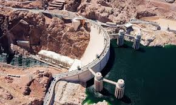

"HOOVER DAM"
A Model of the Concrete Dam Built Over Colorado River
Located 40 miles from Las Vegas, the National Landmark, Hoover Dam, still attracts many people. This project will involve the viewing of the Hoover Dam from various angles.
The dam is located on the border between the states of Nevada and Arizona, generating electrical power for more than a million homes. It is also a attraction for various tourists.
The purpose of this project is to use animation tools to create model for people who are inerested in the structure of the dam or in the history of it's construction.
Using different sources of images and videos allow more details implemented into the dam model.
Sources:
http://www.history.com/topics/hoover-dam
http://digital.library.unlv.edu/objects/lv_water/605
http://www.grandcouleedam.com/hoovervsgcd.htm
Images:
